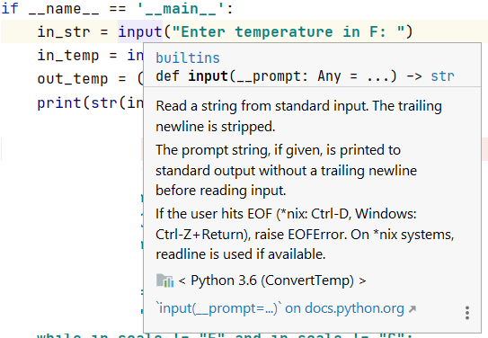
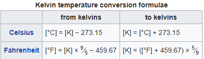
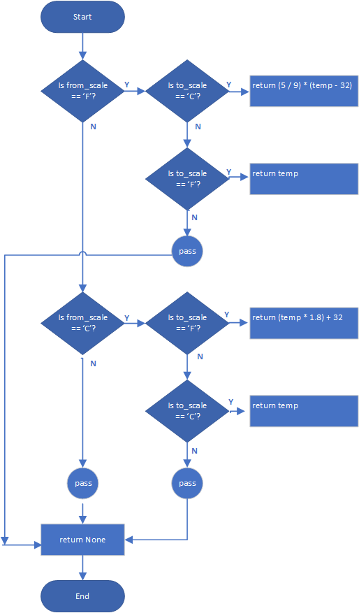

In the past few lessons, you have been exposed to built-in functions, which are functions built into the Python language to hide complexity. The built-in functions you have seen so far are
You probably noticed that these functions take an argument, which is the input to the function, and return a value, which is a result of performing the function. Consider the following example:
in_str = input("Enter temperature in F: ")
in_temp = int(in_str)
out_temp = ...
print(str(in_temp)+'F'+' = '+str(out_temp)+'C')
The argument to the input function is the string that you want to prompt the user to a value on the keyboard. The return value is a string that contains what the user typed. If you aren’t sure what a built-in function does, you can hover over the use of the function in program:  It shows the definition of the function and describes it in detail:
def input(__prompt: Any = ...) -> str
def indicates a definition, input is the function name. __prompt: is the name of the argument, which you will replace by a string, and the function returns a string. Note: Standard input and output are the keyboard and console, respectively.
The argument to the int function is the value of in_str–in this case it is a string–that you want to convert to a return value, which is a number that you want to use in calculations. When you hover over the function name int, you get almost too much information, but you should read it carefully anyway. It says "Convert a number or string to an integer, or return 0 if no arguments are given. If x is a number, return x.__int__(). For floating point numbers, this truncates towards zero."
The syntax of the print function is more complicated still; however, it prints only one object (a string in this case) and does not return a value (-> None). You don’t need to understand everything about the documentation initially (and maybe never), but you will need to notice examples and experiment.
Recall that one reason Python provides built-in functions is to hide complexity. That is the same reason you will write functions, along with the ability to reuse chunks of code without having to remember the details. If fact, to use a function, you only need to know:
You start by defining this signature (name, input arguments, and return values) that enables Python to uniquely identify the function. After that, you must fill in the program logic that accomplishes the purpose of the function. Let’s take significant logic in the previous ConvertTemperature program and turn it into a function:
if in_scale == "F":
# Convert Fahrenheit to Celsius
out_temp = (5 / 9) * (in_temp - 32)
# Set out_scale="C"
out_scale = "C"
elif in_scale == "C":
# Convert Celsius to Fahrenheit
out_temp = (in_temp * 1.8) + 32
# Set out_scale="F"
out_scale = "F"
else:
print("Invalid scale")
Let’s name the function convertTemp(). What are the input arguments we will need? They are
The return value is the converted temperature; however, because you want to avoid print statements, which would be a side effect of the calculation if you left it in your function, you will also need to return a special value, None, indicating that a return value was not provided. The type for the return value is Object, since it could be None, as well as int or float.
Here’s what the covertTemps() function looks like after meeting the requirements identified above:
def convertTemp(from_scale: str, to_scale: str, temp: int) -> object:
if from_scale == "F":
if to_scale == "C":
return (5 / 9) * (temp - 32) # Celsius to Fahrenheit
elif to_scale == "C":
return temp
else:
pass
elif from_scale == "C":
if to_scale == "F":
return (temp * 1.8) + 32 # Celsius to Fahrenheit
elif to_scale == "C":
return temp
else:
pass
else:
pass
return None
The definition is def convertTemp(from_scale: str, to_scale: str, temp: int) -> object:, which is identified by the def statement. The name follows along with parentheses. (). The arguments are listed within the parentheses along with their associated types. Following the arguments is an arrow and type of the return value. Note the colons, which separate the variable names and types and also mark the end of the definition.
The names of the arguments can be different from the names used when calling the function; for example:
out_temp = convertTemp(in_scale, out_scale, in_temp)
The function definition provides names that are used in the implementation of the function; it does not specify the names that are used to actually call the function. If it did, your main program would be restricted to only using names dictated by the function implementer, which for large programs written by multiple programmers, might not be you. The function signature is actually defined by the function name and the argument and return types, not the actual variable or argument names. Notice that the function definition does not even specify the variable being returned.
What follows next is the code that implements the function. It contains logic that is very similar to the previous assignment. The logic difference is that the calling program must provide both the input and output scales, and allows the scales to be the same, e.g. "F" in and "F" out is okay, instead of considering it to be an error. If there is a problem with one of the scales, the function returns None, rather than the converted temperature. Other than the return statement, the only the pass statement is new; it specifies that nothing further happens in the block and the program execution flows to the next statement.
One last thing, function definitions in the same file as the main program must come before the main program, as follows:
def convertTemp(from_scale: str, to_scale: str, temp: int) -> object:
...
if __name__ == '__main__':
...
Later, we will discuss placing functions and other objects in separate files, which is preferred, especially for reuse.
if __name__ == '__main__':
in_scale = "" # Define scale before it is used
while in_scale != "F" and in_scale != "C" and in_scale != "K":
in_scale = input("Enter scale as K or F or C: ")
out_scale = input("Enter result scale as K or F or C: ")
in_temp = int(input("Enter temperature to convert: "))
out_temp = convertTemp(in_scale, out_scale, in_temp)
if out_temp != None:
print(str(in_temp) + in_scale + ' = ' + str(out_temp) + out_scale)
else:
print("Bad scale. Try again.")

